DESCENT: Directed Edge Scene Encoding for Airport Surface Movement Prediction
Abstract
Advanced automation is a key technology for enhancing the safety of ground operations amidst the increasing density of commercial air traffic. While motion forecasting is a well-studied task in autonomous driving, its application to airport surface movements remains underexplored. To enable efficient and accurate prediction in this domain, we propose DESCENT, a transformer-based architecture designed to handle heterogeneous dynamics and strict topological constraints. Our approach features a Potential Reachable Set (PRS) context sampling mechanism that adaptively collects airfield environment context across diverse operational phases. Combined with a detection transformer-based decoder, DESCENT generates accurate trajectory forecasts. Extensive evaluations on the Amelia-10 benchmark demonstrate significant performance improvements over state-of-the-art baselines. These gains are especially pronounced in safety-critical scenarios, where our domain-aware sampling provides critical long-horizon context necessary for safe navigation.
Motivation and Contributions
- The continuous growth of commercial air traffic has substantially increased airport surface movements, raising runway occupancy rates and the complexity of traffic management
- Critical situations such as runway incursions have become more frequent, and the risk is further intensified by air traffic control staffing shortages
- Trajectory prediction allows conflicts to be detected early — verifying runway clearance during an aircraft's final approach, or flagging an aircraft taxiing across an active runway — so that timely warnings reach controllers and pilots
- The ingredients are already in place: runways and taxiways provide structured map context, and System Wide Information Management (SWIM) provides the motion data
- Amelia-TF demonstrated that autonomous-driving-inspired prediction architectures are feasible for airport surface operations, and the Amelia framework supplies a large-scale dataset (42 airports) with the Amelia-10 benchmark subset
- Challenges
- Airport surface movements exhibit a substantially broader dynamic range than road traffic, spanning low taxiing speeds up to takeoff and landing velocities
- Rapid accelerations, e.g. during a rolling start, make motion dynamics highly context-dependent — they can change significantly within a few seconds
- Within one fixed temporal horizon, a predicted trajectory may cover only a few meters or extend over several kilometers, so the required map context varies by orders of magnitude
- Fixed-size regions of interest or a predefined number of nearest map tokens therefore either miss the long-horizon context of high-speed maneuvers or flood the model with irrelevant segments
Key Contributions
Approach
Following the airport surface trajectory prediction task defined in the Amelia framework, DESCENT takes historical observations over a past horizon of $H_p$ time steps together with airfield map data, and predicts $k$ future trajectory hypotheses with associated confidence scores for a focal agent over a future horizon $H_f$. The multimodal formulation accounts for the inherent uncertainty of taxiing maneuvers, ensuring high coverage of potential future actions. The architecture is built on the following core components:
- Potential Reachable Set (PRS) Sampling: We define the PRS as the set of all airfield segments accessible from an agent's current location via a valid path in the lane graph. Unlike fixed regions of interest or top-k nearest tokens, this selects context adaptively from infrastructure constraints, keeping token counts manageable while preserving the information relevant for prediction.
- Directed Edge Map Representation: As a preprocessing step, raw map data is reorganized into semantically meaningful airfield segments. Consecutive graph edges belonging to the same structural element are merged while intersection nodes and edge directions are preserved to maintain topological consistency, and a type-dependent maximum segment length keeps granularity balanced.
- Type-Aware Traversal Depth: Reachable distance is bounded by lane-type-specific thresholds rather than instantaneous vehicle metrics, because current velocity poorly predicts future path length — an aircraft stationary at a runway threshold will cover far more ground over the next horizon than one taxiing toward a terminal. If a runway segment is involved, the entire runway is included to cover long-horizon takeoff and landing trajectories.
- Airfield Segment Encoding: Sampled segments $S \in \mathbb{R}^{N_s \times P_s \times 2}$ are normalized into a segment-centric local frame and encoded with a PointNet-like airfield encoder $f_A$, producing one token per segment.
- Motion Encoding: Agent observations $O \in \mathbb{R}^{N_a \times T_h \times D_m}$ are transformed into a local frame defined by the most recent pose, projected into feature space, processed by temporal self-attention, and pooled over time into a compact per-agent token by a lightweight motion encoder $f_M$.
- Scene Encoding: Agent and map tokens are concatenated into a scene context $C \in \mathbb{R}^{(N_a+N_s) \times D}$, each augmented with a positional embedding $P_\text{emb}$ of its local frame pose and a categorical embedding $T_\text{emb}$ for segment type and agent class. An attention-based scene encoder $f_S$ then models the relational dependencies between the focal agent and all other scene elements.
- Trajectory Decoding: A decoder $f_D$ inspired by detection transformers applies factorized cross-attention from $k$ learnable mode queries $Q$ onto the encoded scene. The updated mode tokens parameterize a Gaussian Mixture Model, and shallow MLP heads emit trajectory means, variances, and confidence scores.
- SDF Map-Compliance Regularization: Because airport surface motion is constrained to predefined segments, training adds a signed distance field term. A rasterized SDF at 5 m resolution stores the distance to the nearest airfield segment; predicted points are projected onto this grid and off-track predictions are penalized, promoting topologically feasible trajectories.
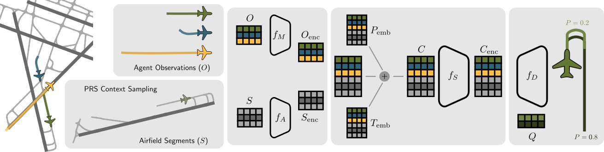
Overview of the DESCENT architecture. PRS-based airfield map sampling provides the map context for the current focal agent position. Agent observations $O$ and airfield segments $S$ are encoded by $f_M$ and $f_A$; positional $P_\text{emb}$ and type $T_\text{emb}$ embeddings form the scene context $C$, which is encoded by $f_S$. The decoder $f_D$ uses learnable queries $Q$ to produce output trajectories $T$ and probability scores $P$.
Potential Reachable Set Sampling
To extract the environmental context for a given vehicle, we first identify its current segment. Candidates are selected by Euclidean distance and refined by a heading consistency constraint, which avoids incorrect associations in dense intersection areas: if the closest segment's orientation deviates significantly from the vehicle's heading, the next $n$ candidates are evaluated, defaulting to the closest segment only if no angular match is found. From the current segment, a depth-first traversal of the lane graph — constrained by domain-specific length thresholds — enumerates all admissible paths. These are precomputed offline and stored as segment-ID metadata, so the map can be filtered at test time with minimal computational overhead. A backward traversal from the focal agent's current position additionally incorporates historical path context.
1. Locate the agent's current airfield segment
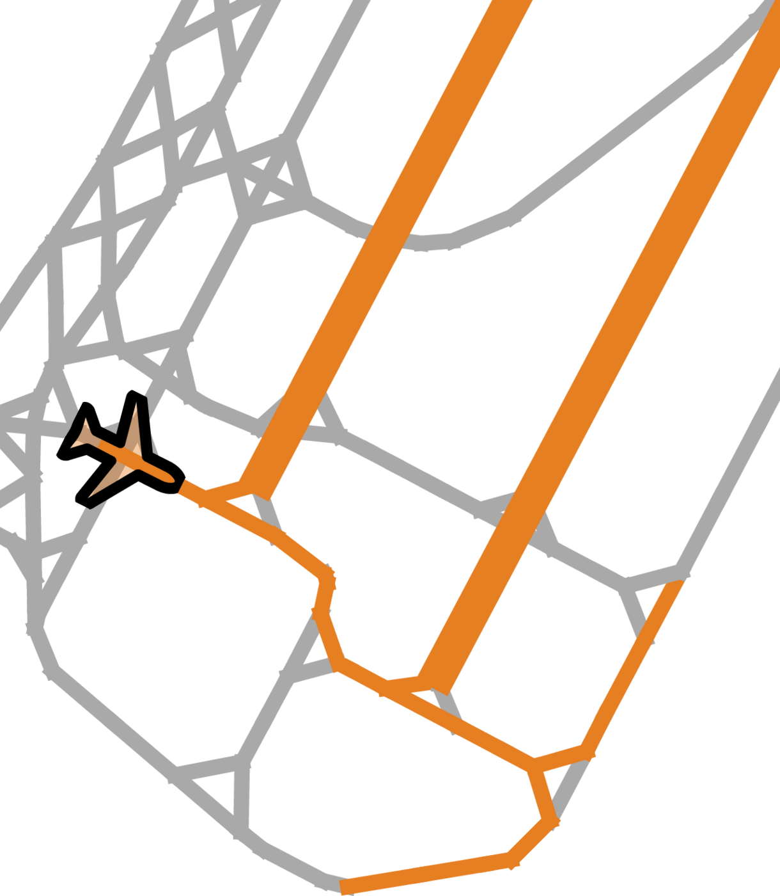
2. Traverse the lane graph to identify reachable pathways
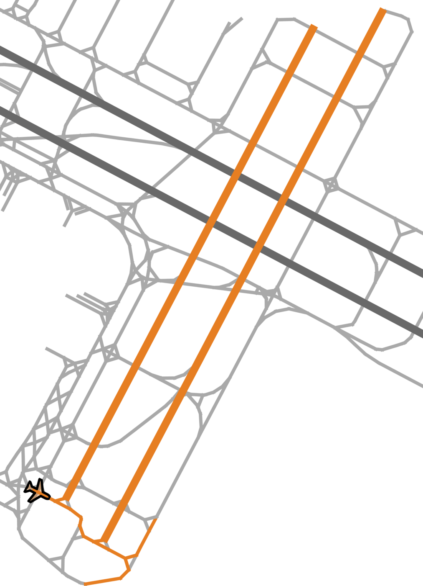
3. Sparse context of local segments and distant but reachable structures
PRS-based context sampling at KSFO. The selection reflects the agent's operational constraints, prioritizing high-velocity paths such as runways over distant, unreachable taxiways.
Evaluation Setup
We train and evaluate on the Amelia-10 benchmark, which covers ten U.S. airports (KBOS, KDCA, KEWR, KJFK, KLAX, KMDW, KMSY, KSEA, KSFO, PANC) with differing runway layouts, terminal configurations, and traffic densities. We follow the official preprocessing pipeline and the benchmark protocol: a sampling rate of 1 Hz, a past observation length of $H_p = 10\,\text{s}$ ($T_h = 10$ input steps), a prediction horizon of $H_f = 50\,\text{s}$ ($T_f = 50$ output steps), and $k = 4$ trajectory modes. Results are reported as minimum Average Displacement Error (mADE) and minimum Final Displacement Error (mFDE) in meters, for the 20 s and 50 s horizons.
Two focal agent selection strategies are evaluated: the random baseline, and a criticality-based strategy that prioritizes agents near potential conflict points while down-weighting stationary agents. The critical-agent evaluation set exhibits substantially higher variability and interaction complexity. As a baseline, we re-run Amelia-TF from the official codebase and pretrained weights, since the framework has undergone several refactorings and currently reproducible results differ from those originally reported — this ensures a fair comparison on identical data splits.
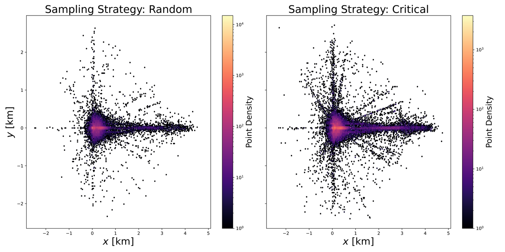
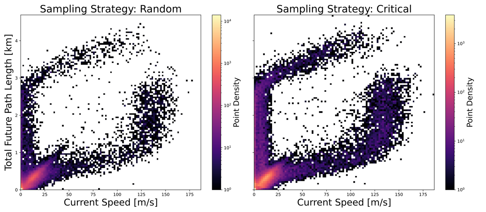
Random vs. critical focal agent sampling in Amelia-10. Top: the distribution of future trajectory endpoints is markedly more diverse for critical agents. Bottom: critical agents show higher dynamic changes — low initial speed with long future trajectories (acceleration) and high initial speed with short future paths (braking) — compared to the more linear correlation seen for random agents.
Results
Single Airport — Critical Agents
| Metric | Method | KMDW | KEWR | KBOS | KSFO* | KSEA* | KDCA | PANC | KLAX | KMSY | KJFK | Avg† |
|---|---|---|---|---|---|---|---|---|---|---|---|---|
| mFDE@50s | Amelia-TF | 66.69 | 91.18 | 81.61 | – | – | 105.60 | 170.48 | 137.40 | 87.46 | 102.77 | 105.40 |
| DESCENT (Ours) | 59.64 | 77.74 | 64.49 | 56.60 | 61.45 | 54.04 | 67.13 | 64.50 | 68.98 | 78.67 | 66.90 | |
| mADE@50s | Amelia-TF | 26.41 | 32.88 | 30.79 | – | – | 39.24 | 61.35 | 50.74 | 31.41 | 39.23 | 39.01 |
| DESCENT (Ours) | 24.88 | 31.69 | 26.80 | 23.22 | 24.79 | 25.46 | 28.41 | 27.43 | 27.39 | 33.56 | 28.20 | |
| mFDE@20s | Amelia-TF | 13.35 | 15.78 | 14.74 | – | – | 20.20 | 28.08 | 25.79 | 14.65 | 19.82 | 19.05 |
| DESCENT (Ours) | 13.60 | 17.20 | 14.25 | 12.40 | 12.68 | 15.76 | 15.44 | 15.21 | 14.88 | 19.29 | 15.70 | |
| mADE@20s | Amelia-TF | 6.94 | 7.79 | 7.33 | – | – | 10.26 | 14.55 | 12.15 | 7.36 | 9.65 | 9.50 |
| DESCENT (Ours) | 7.23 | 8.86 | 7.32 | 6.49 | 6.64 | 8.63 | 8.06 | 8.21 | 7.86 | 9.80 | 8.25 |
Errors in meters, evaluating the most critical agent per scenario. *No checkpoints available for the official, refactored codebase. †Average excluding KSFO and KSEA.
In safety-critical scenarios and at the long 50 s horizon, DESCENT significantly outperforms the Amelia-TF baseline, underscoring its ability to capture long-range contextual dependencies and complex scene interactions. At the shorter 20 s horizon the gap narrows and results are largely comparable, as short-term predictions are inherently less challenging and sparse heterogeneous context matters less when agents stay within a limited spatial vicinity. Per-airport accuracy correlates with the average spatial extent of ground-truth trajectories: future trajectories at KMDW average roughly 430 m, whereas airports with higher absolute errors such as PANC and KLAX exceed 700 m.
Single Airport — Random Agents
| Metric | Method | KMDW | KEWR | KBOS | KSFO* | KSEA* | KDCA | PANC | KLAX | KMSY | KJFK | Avg |
|---|---|---|---|---|---|---|---|---|---|---|---|---|
| mFDE@50s | Amelia-TF | 27.52 | 52.06 | 51.01 | 40.23 | 65.82 | 47.75 | 86.24 | 89.46 | 29.84 | 55.32 | 54.52 |
| DESCENT (Ours) | 25.23 | 48.80 | 42.23 | 37.11 | 39.56 | 27.92 | 44.14 | 45.17 | 24.63 | 46.27 | 38.11 | |
| mADE@50s | Amelia-TF | 11.80 | 20.96 | 20.47 | 17.05 | 29.94 | 18.93 | 34.90 | 35.84 | 11.42 | 22.43 | 22.37 |
| DESCENT (Ours) | 11.37 | 21.34 | 18.35 | 15.81 | 17.51 | 13.21 | 20.34 | 20.24 | 10.38 | 20.51 | 16.91 |
Errors in meters, evaluating a random agent per scenario. *No checkpoints available for the official, refactored codebase; values taken from the reported results.
With random focal agents the task is less challenging, resulting in generally lower errors than in the critical-agent setup. DESCENT nevertheless retains a clear advantage, particularly for long-term prediction as measured by mFDE, and achieves better or comparable mADE across all evaluated airports — further validating the robustness of the PRS-based context sampling.
Multi-Airport Model
| Metric | Method | KMDW | KEWR | KBOS | KSFO | KSEA | KDCA | PANC | KLAX | KMSY | KJFK | Avg |
|---|---|---|---|---|---|---|---|---|---|---|---|---|
| mFDE@50s | DESCENT (Ours) | 29.73 | 50.37 | 47.94 | 44.23 | 46.50 | 29.99 | 53.46 | 51.08 | 23.31 | 41.48 | 41.81 |
| mADE@50s | DESCENT (Ours) | 13.01 | 21.57 | 20.39 | 18.83 | 20.35 | 14.01 | 24.08 | 22.75 | 10.10 | 17.85 | 18.28 |
A single model trained jointly on all Amelia-10 airports. Errors in meters, evaluating a random agent per scenario.
The jointly trained model surpasses the specialized per-airport models at KJFK and KMSY, likely due to the increased diversity of training scenarios, and nearly matches them elsewhere. Degradation is most pronounced at PANC and KLAX, two of the most challenging airports in the dataset, indicating that airfields with highly unique operational patterns can still favor specialized models.
Ablation: Scene Context Sampling
| Scene Context Sampling | KBOS | KSFO | PANC | Avg |
|---|---|---|---|---|
| Top-K closest (50 segments) | 129.82 | 122.75 | 169.92 | 140.83 |
| Radius-based (0.3 km) | 86.95 | 80.44 | 107.69 | 91.70 |
| PRS-based (Ours) | 64.49 | 56.60 | 67.13 | 62.74 |
mFDE@50s in meters on the respective test sets, using the most critical agent per scenario, for an easy (KSFO), a medium (KBOS), and the most challenging (PANC) airport.
PRS-based sampling outperforms both standard strategies at every airport, reducing the average mFDE@50s by 32% relative to radius-based sampling and by 55% relative to top-k nearest segments.
Model Complexity and Latency
Amelia-TF: 89.8M
Amelia-TF: 16 ms
Amelia-TF: 36 ms
Amelia-TF: 76 ms
than the complete map
Latencies measured on an NVIDIA L40 GPU. Latent dimension $D = 128$ (Amelia-TF: $D = 256$).
Qualitative Results
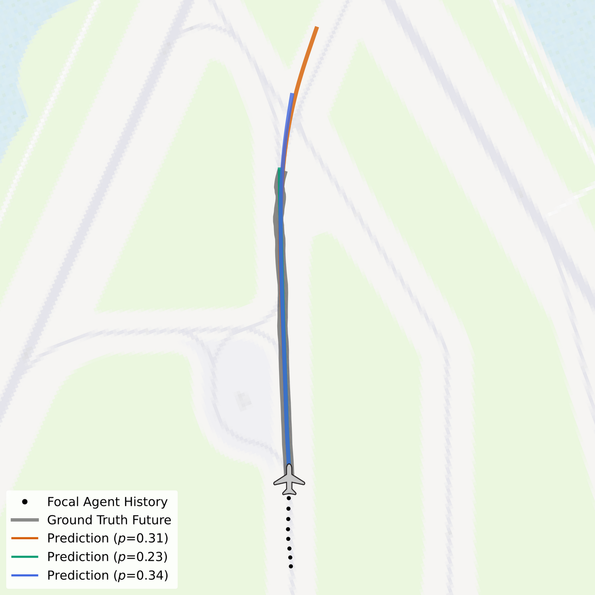
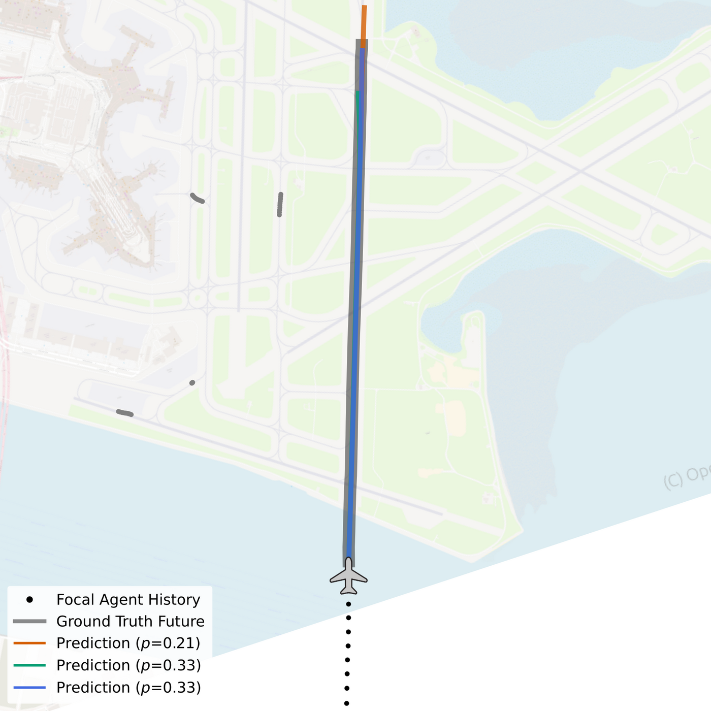
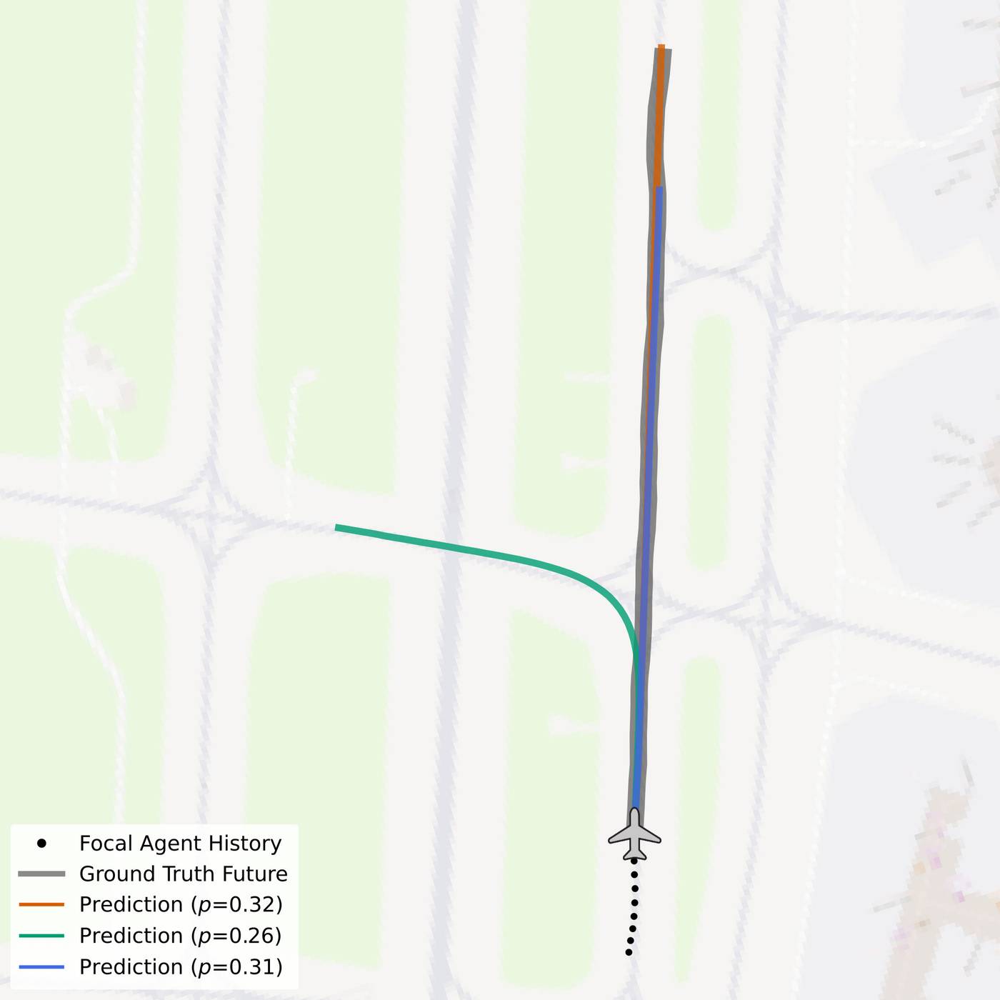
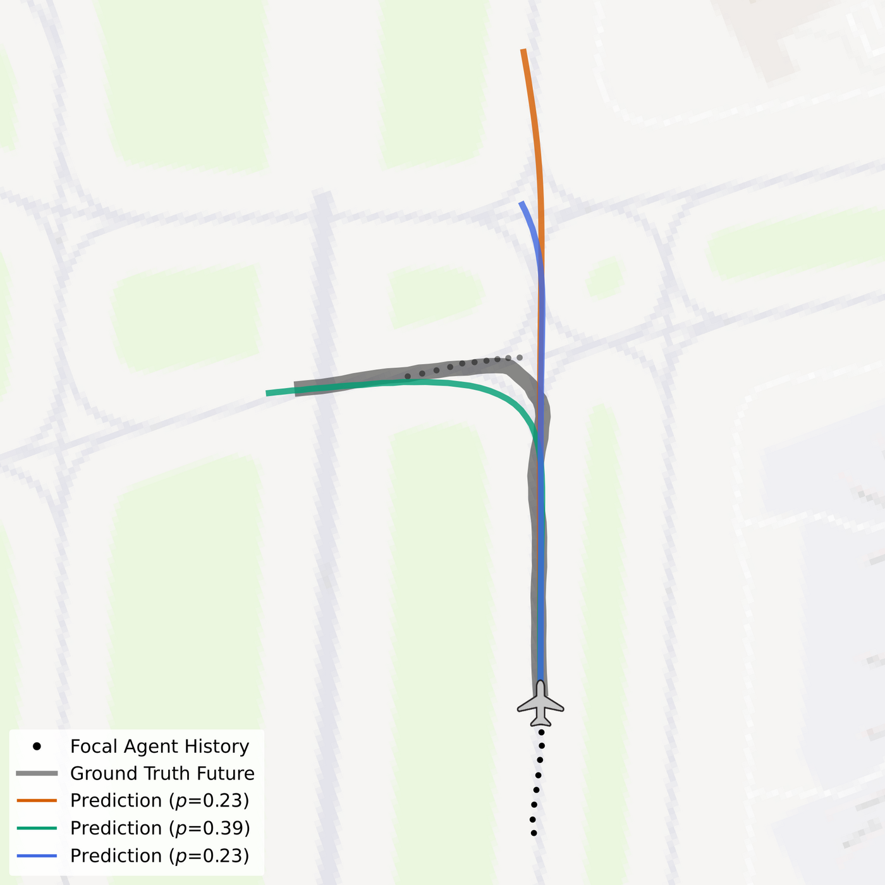
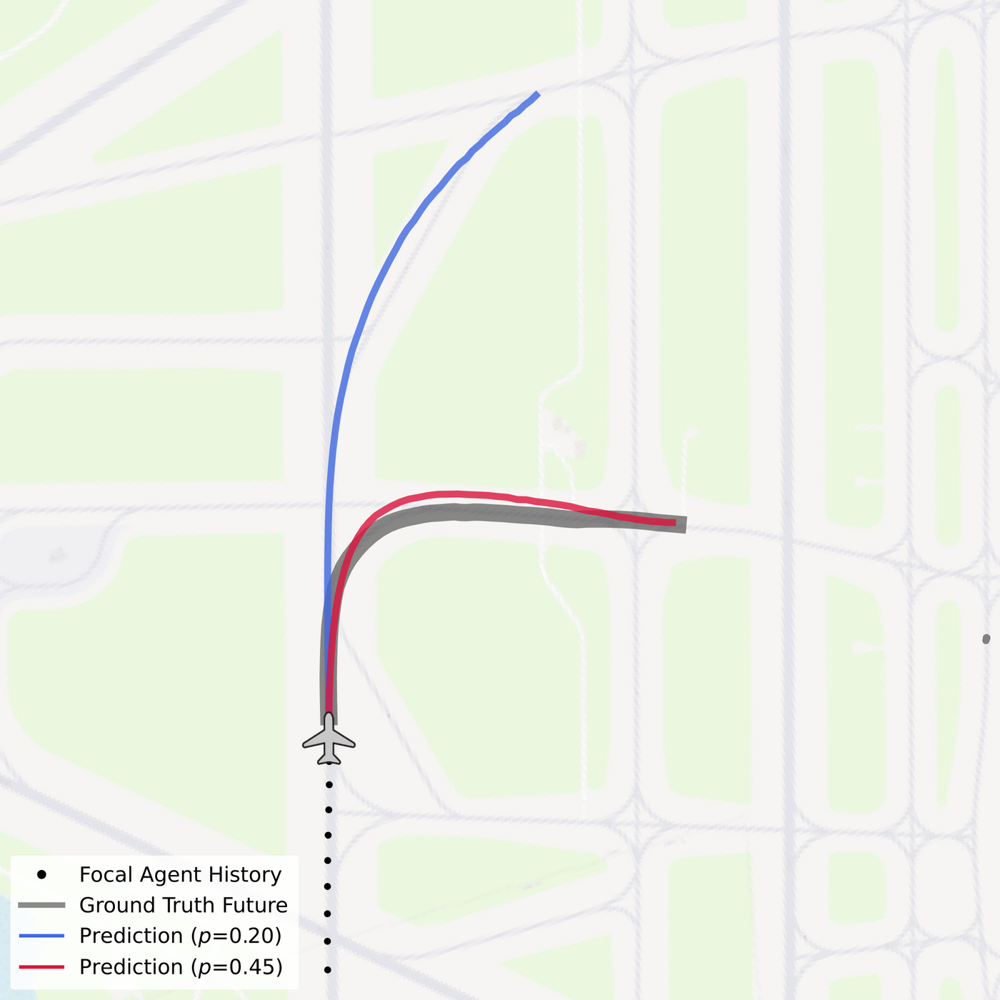
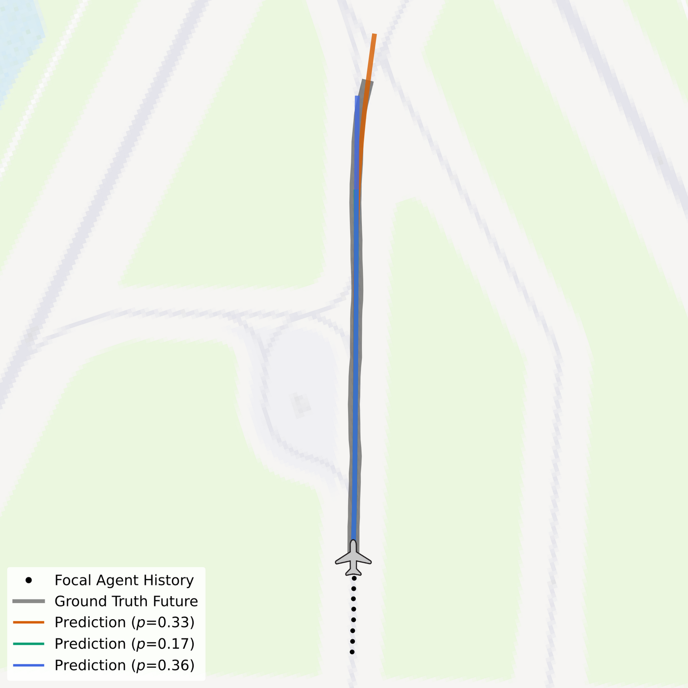
$50\,\text{s}$ DESCENT predictions (colored lines) alongside the $10\,\text{s}$ historical focal agent movement (black), surrounding agent histories (light gray), the ground truth future trajectory (thick, dark gray), and airfield map context. Predictions with confidence scores below 0.15 are omitted for clarity. Scenarios are sampled from the KBOS test set of Amelia-10. Best viewed with zoom.
Prediction Rollouts
The clips below roll out the full $50\,\text{s}$ prediction horizon step by step for scenarios from the KBOS test set. Black dots mark the observed $10\,\text{s}$ history of the focal agent, the thick gray line the ground truth future, and the colored lines the trajectory hypotheses produced by DESCENT.
Successful predictions across taxiing, takeoff, and landing phases. Basemap © OpenStreetMap contributors.
Failure Cases
Multimodal forecasting cannot resolve every intent. The clips below show scenarios in which none of the $k = 4$ hypotheses tracks the executed maneuver — typically when an agent takes an unexpected branch at an intersection, or when its dynamics change abruptly within the horizon.
Failure cases on the KBOS test set. Basemap © OpenStreetMap contributors.
BibTeX
@inproceedings{prutsch2026descent,
title = {{DESCENT: Directed Edge Scene Encoding for Airport Surface Movement Prediction}},
author = {Prutsch, Alexander and Schinagl, David and Possegger, Horst},
booktitle = {Proceedings of the IEEE/RSJ International Conference on Intelligent Robots and Systems (IROS)},
year = {2026}
}This work was partially funded by the Austrian Research Promotion Agency (FFG) under the Take Off project SAFER (894164).